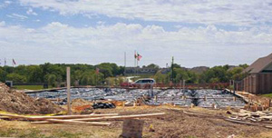
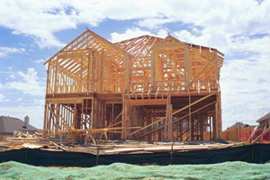
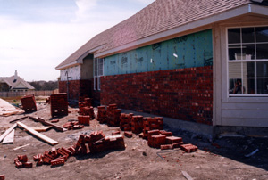
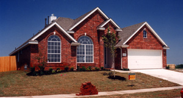

The following are the various stages required to construct a custom home:
1. Permits and Site Preparation
We (the builder) will secure the appropriate building permits and authority approvals to begin construction. A surveyor or engineer will then determine the position of your home on its lot. The site is marked with stakes to indicate the foundation's position. The lot will be cleared of trees and other foliage that could interfere with construction.
2. Foundation

Perimeter form boards are installed on the site. The form is filled to provide a stable base for the foundation. Underground plumbing is installed during this stage, including sewage and water lines. Trenches are dug and polyethylene vapor barrier is placed over the entire foundation area. Plastic steel cables are then placed over the polyethylene. The slab will then be poured and allowed to cure. The cables are then stretched to provide structural support for the surrounding concrete.
3. Frame

Wood beams, studs, rafters, and floor joists are used the create the underlying structure of the home. This process usually takes about 2 to 3 weeks. After the skeleton of your home is built, the roof is placed on top of the structure.
4. Mechanical Installation
A "rough in" installation of mechanical systems occurs during this stage. This includes internal plumbing lines, gas lines, electrical wiring, and heating and cooling ducts. This phases usually takes less than 10 days.
5. Finishing

During this stage of construction, insulation is placed on exterior walls and ceiling surfaces are finished by installing dry wall. On the outside of your home, siding or planking will be installed. In addition, brick layers will begin surrounding your home with your chosen brick.
On the interior of your home, doors, mouldings, and trims are completed. The walls are painted and cabinets and countertops are finished. Any remaining plumbing, heating, and electrical details are also completed, including installation of any major appliances. Floor and wall coverings are then installed.
6. Landscaping and Final Details

During this stage of home construction, only the final details are left to complete. Any grading of your lot and landscaping is conducted. Gutters and downspouts for water drainage are installed. And last but not least, we install your sidewalk, driveway, and patio. We leave this task until the end because with all the contruction tools and vehicles that come on an off your property during the many construction stages, any existing concrete walkways would likely get damaged.